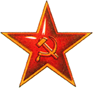

Дневник партизана

- Вторник. Выбили немцев с опушки. Засели в доме
 лесника.
лесника.
- Среда. Мощная контратака немцев вынудила нас оставить занятые ранее позиции.
- Четверг. Под покровом ночи смогли снова засесть в доме лесника. Курим "Беломор".
- Пятница. Вернулся лесник и всех выгнал.
© бородатый анекдот
Продукты
- МОЛОЧНЫЕ ПРОДУКТЫ
- Молоко (2 пакета)
- Масло
- Кефир
- Творог
- ОВОЩИ И ФРУКТЫ
- Овощи
- Огурцы
- Помидоры
- Перцы "болгарские"
- красные (2 шт.)
- желтые (1 шт.)
- Фрукты
- ХЛЕБОБУЛОЧНЫЕ
- Черный "Бородинский"
- Батон (2 шт.)
- МЯСО
- Куриное филе
Говяжья вырезка